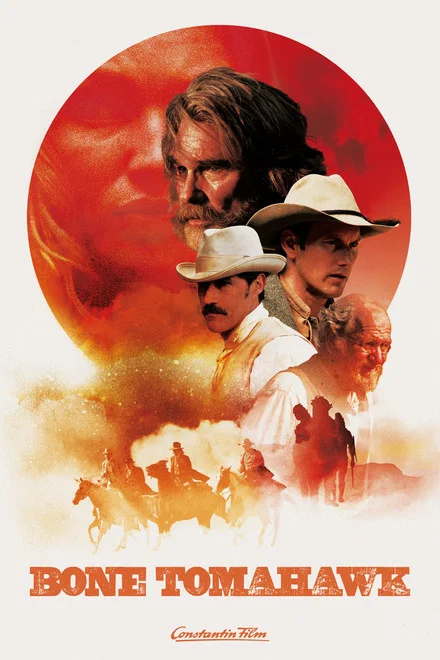
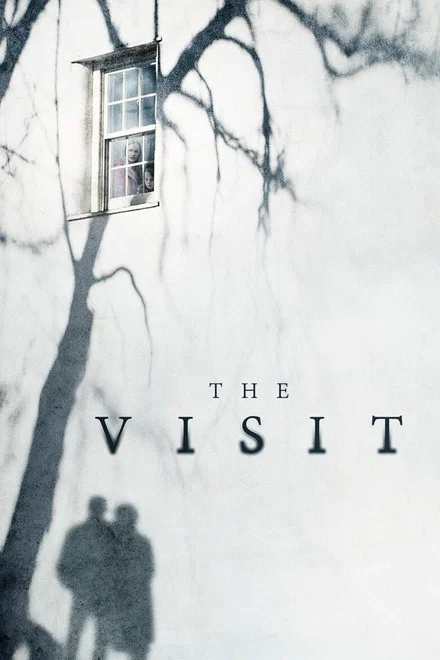
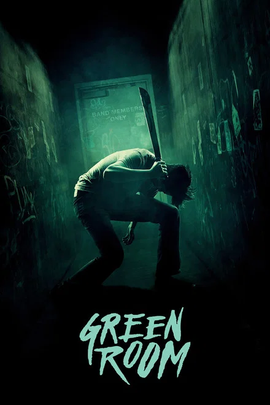
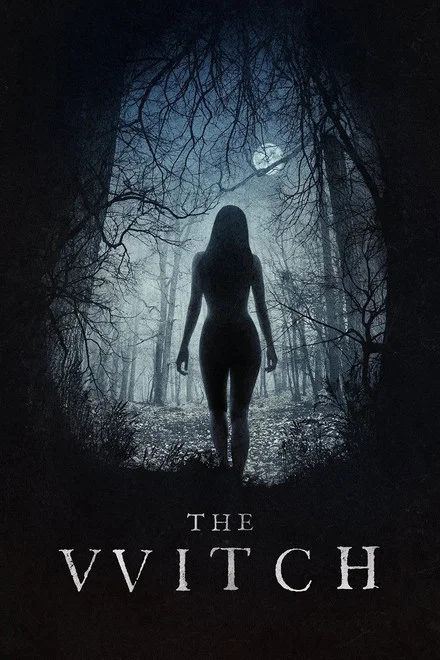
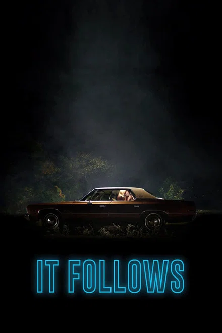
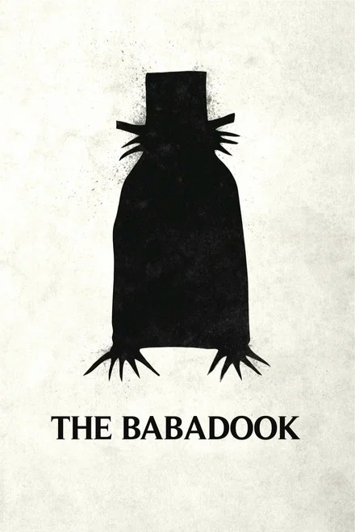

Archivio
Tutti i film recensiti, in ordine di uscita internazionale: dal più recente al più vecchio.

2015 · uscita USABone Tomahawk

2015 · uscita USAThe Visit

2015 · uscita USAGreen Room
-

· uscita USAThe VVitch
-

· uscita USAIt Follows
-

· uscita AustraliaThe Babadook
Nessun film corrisponde alla tua ricerca.